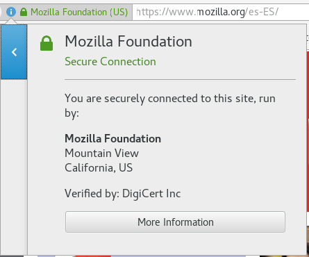

Cifrado de datos
Jose Suarez

Estudiante de 7mo semestre de Ing. Sistemas.
FSA, Mozillero, y entusiasta de la seguridad informatica.
Github + Twitter: @Josexv1
Que es el cifrado?
Es el proceso donde por el que una información legible se transforma mediante un algoritmo (llamado cifra) en información ilegible
Criptografia
Lo mismo, pero con Ka
Hola = Kaho kala
Prueba = Kapru Kae Kaba
Mucho mas atras.
Criptografia, viene de la antigua Grecia.
krypto “ocultar” y graphos “escribir”, es decir escritura oculta.
No tan atras.
HTTPS!
Protocolo seguro de transferencia de hipertexto
Encodear vs. Encriptar vs. Hashear vs. Obfuscar
Cuales son las diferencias?
Encodear.
Es transformar la informacion para que alguna APP lo lea correctamente.
Encriptar
Es transformar la informacion con un metodo revertible.
Hashear
Es transformar la informacion con un metodo irreversible.
- El mismo dato, producira el mismo resultado
- Multiples datos, no pueden producir el mismo resultado
- No debe ser posible ir del resultado al origen
- Una modificacion al dato resulta en un cambio drastico del resultado
Ofuscar
Es intentar hacer mas dificil de leer algo, para evitar que lo copien sin permiso, o lo ataquen.
Por ejemplo mi letra.Cifrados modernos
- Triple DES Usa 3 claves que se multiplican de 56bits, ya esta pasado de moda
- RSA (el mas comun asincrono) Popular con PGP, usa Clave publica, y privada.
- Blowfish (Comun Asimetrico) Desarrollado para reemplazar DES, separa la informacion en bloques de 64 bits y los cifra individualmente
- Twofish
- AES (Comun en routers.) Se cree que es inmune a todo tipo de ataques, menos a fuerza bruta.
El futuro!
Actualmente con nuestro poder de procesamiento es imposible romper una clave de 1024 bits
Las computadoras Quanticas, y la matematica, pueden cambiar eso rapidamente, pero no en un futuro cercano.